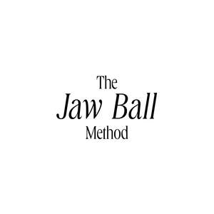

Trade Mark Journal No.2025/044 31 October 2025
UK00004278917 16 October 2025 (9,41,44)

- Class 9
- Downloadable instructional videos, audio recordings, digital guides, and electronic publications in the field of massage therapy, bodywork, and self-care; downloadable mobile applications and software providing education and training in therapeutic massage techniques; downloadable digital content featuring information and tutorials relating to jaw massage balls and the treatment of TMJ dysfunction.
- Class 41
- Education and training services in the field of self-care, massage therapy, and physical rehabilitation; provision of instructional courses, workshops, demonstrations, and online programmes relating to the use of massage tools for the relief of temporomandibular joint (TMJ) dysfunction and associated muscle tension; delivery of guided self-care training using jaw massage balls; provision of continuing professional development (CPD) education featuring video tutorials, webinars, and digital learning materials focused on fascia release, posture awareness, and jaw relaxation techniques.
- Class 44
- Massage therapy; bodywork therapy; myofascial release and physical therapy services; advisory, consultancy, and information services relating to massage, rehabilitation, and physical wellbeing; therapeutic application of massage tools and hands-on techniques for the prevention and treatment of jaw tension, temporomandibular joint (TMJ) dysfunction, and related musculoskeletal disorders; provision of health information and self-care guidance relating to physical wellness and recovery.
Helen Baker